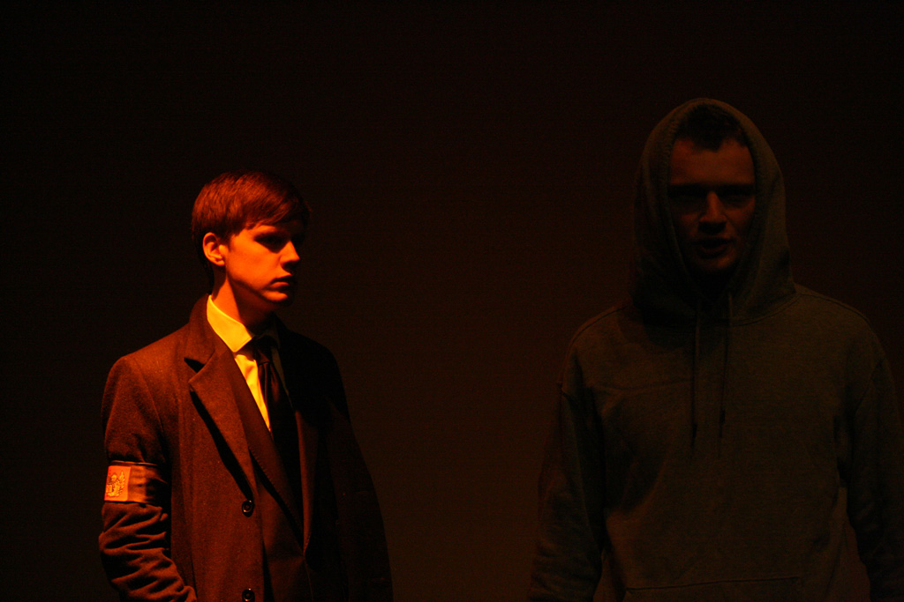
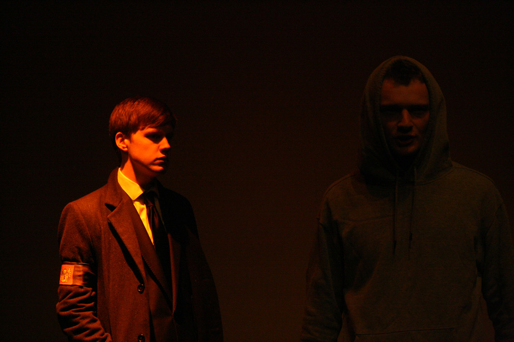

The Annex Theatre
The Annex Theatre is University of Southampton Students' Union's Theatre, featuring shows by Theatre Group, Showstoppers, LOpSoc, Medics Revue, Comedy Soc and many others in the Performing Arts.
The Annex almost always has someone performing in it, whether they're performing a Play, a Musical, a Light Opera or something completely different.